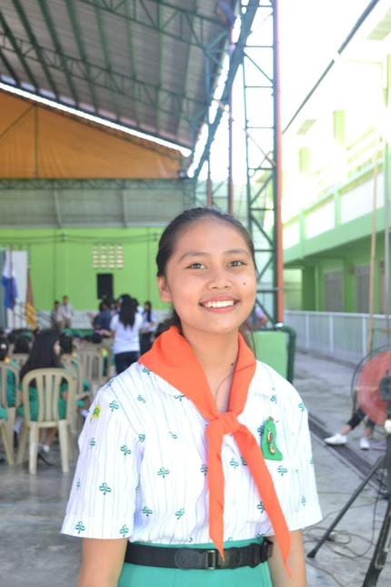
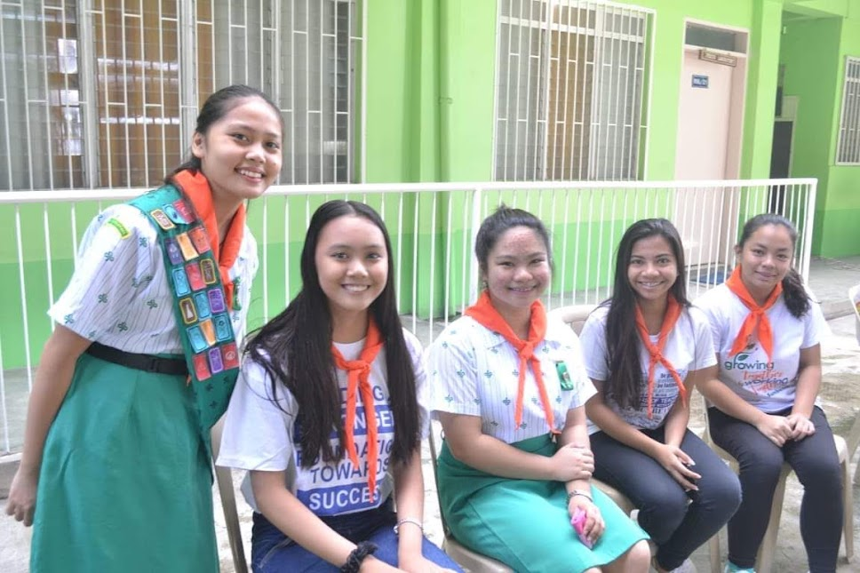
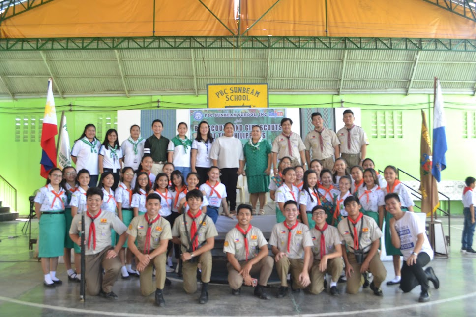
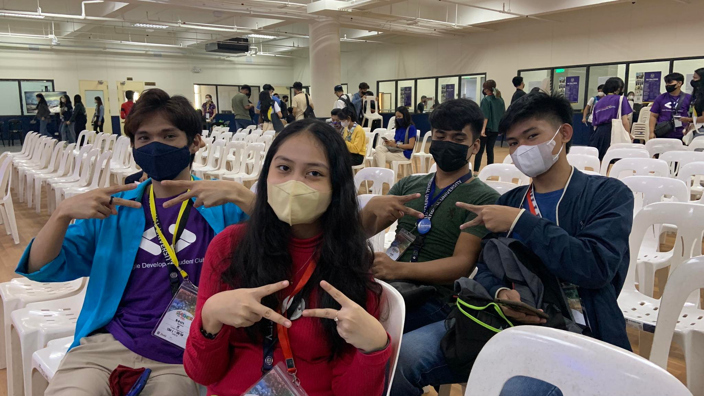
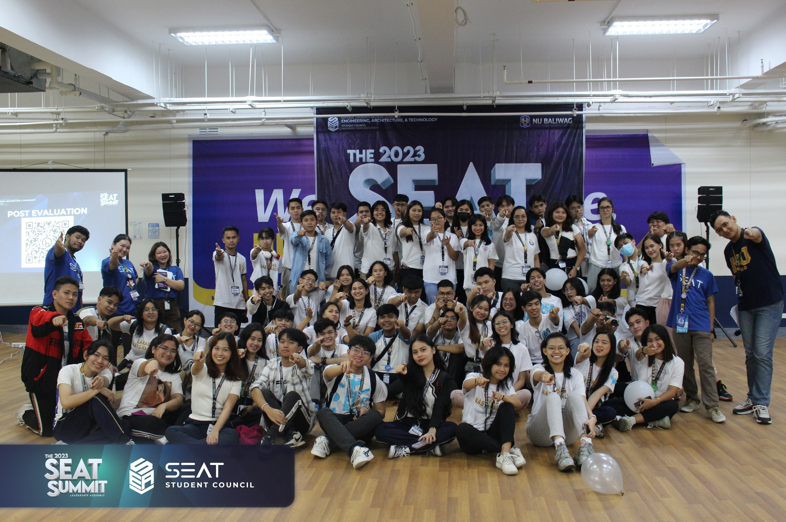
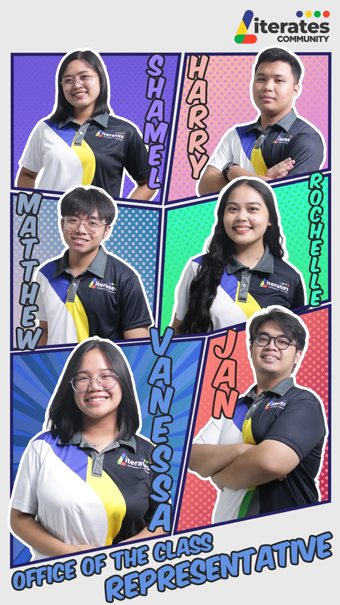
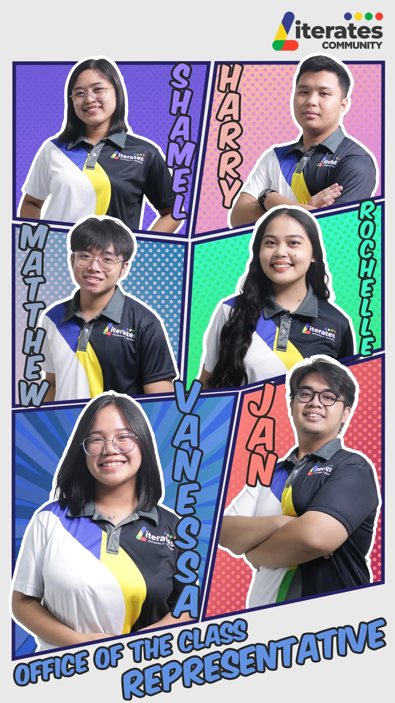

Rochelle was a volleyball varsity player when she was in elementary school. She was one of the athletes at her school to compete in the BulPriSa District Meet. She stopped playing volleyball in high school. to focus on her academics.


Rochelle was a member of the PBCSSI Brass band in high school. She made history as the first woman trombone player in the band, which had been dominated by men since its inception. Initially starting as a 3rd Trombone player, she focused on supporting lower pieces. Her talent and dedication led to her promotion to 2nd Trombone, where she could both support and contribute to the melody. Finally, she achieved the highest position as 1st Trombone, allowing her to lead the melody. Her journey broke barriers and inspired others in the band.
Rochelle was a senior scout leader when she was in junior high school. She started participating in scouting in 2017–2020 way back. her grade 8 journey. This is one of her most unforgettable parts of high school.
  Rochelle has been active in joining different organizations since she started college. The first organization she joined was Google Developer Student. Clubs in first year, where he became a core member and later a leader. Then she joined the NU Literates Community as a bloc representative for their section. Then has joined AWS Cloud Club NU Baliwag as Vice Chief Marketing Officer.
  
